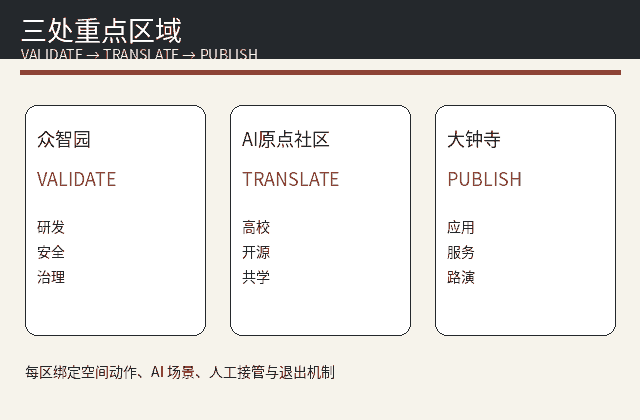
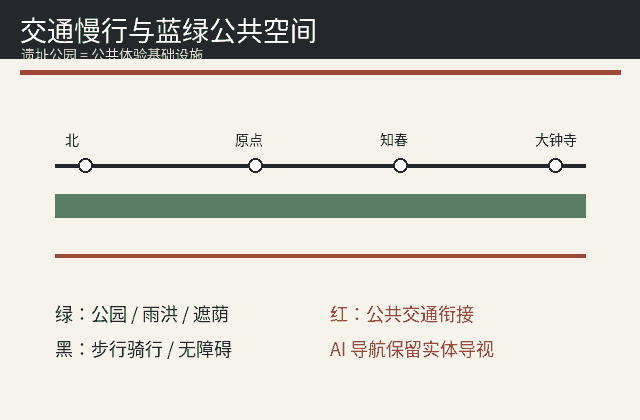

京张零号站 · JINGZHANG STATION ZERO
概念建议；当前 SITE_BOUNDARY 与 KEY_AREA 为仓库 provisional geometry，不构成官方红线或审批依据。
设计概念
一轴·七站·三核·两翼·十二场景。把百年京张的“站”转译为可验证、可退出、可复盘的AI城市基础设施。

用地与更新
用地、建筑和道路均为概念设计层，FAR、高度、退界保持 unknown。

三处重点区域
众智园=验证站；AI原点社区=转译站；大钟寺=发布站。

交通与蓝绿
以遗址公园慢行和轨道换乘为公共底盘，AI设施不得挤占基本公共权利。

指标与证据
known 指标从提交 GeoJSON 复算，正式边界发布后整包重算。